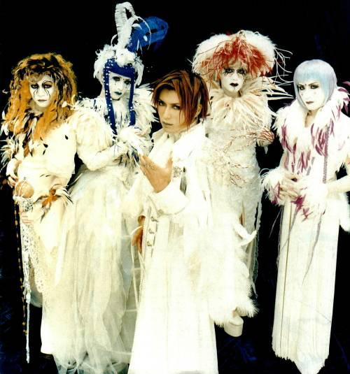
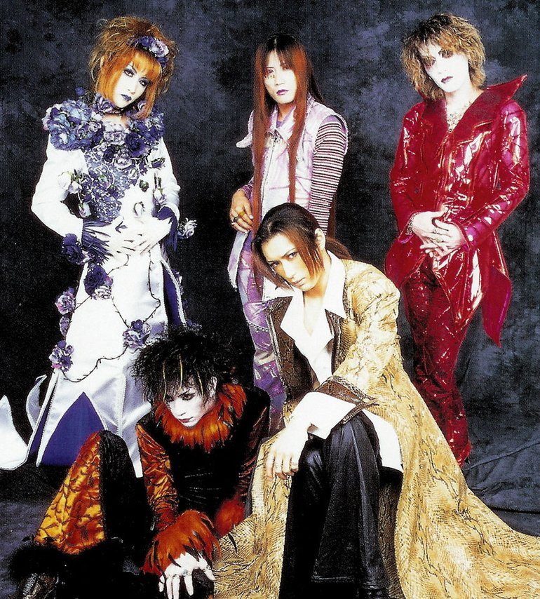
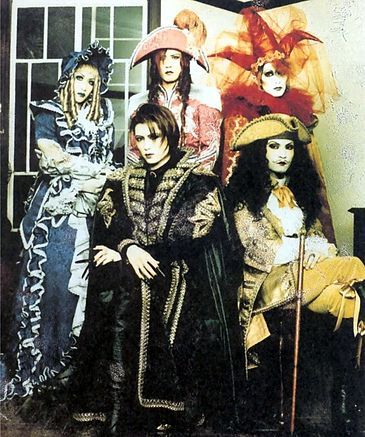

Malice Mizer - Visual Kei Band
Cual es el significado de Malice Mizer?
Malice Mizer (マリス・ミゼル; pronunciado Marisu Mizeru; escrito MALICE MIZER) fue una banda activa desde agosto de 1992 hasta diciembre de 2001. Formada por Mana y Közi, el nombre de la banda significa malicia y miseria y lo usaron como nombre al responder a la pregunta "¿Qué es la humanidad?". Malice Mizer fue famoso por su estilo ecléctico y único, por sus rutinas y sus espectáculos en vivo, presentándose con elaborados trajes y escenografías, fue una banda innovadora y cuando se habla de Visual Kei se le suele tomar como referencia. Durante su historia, la banda pasó por muchas etapas y cambios drásticos de imagen entre cambios de vocalista, pero su trabajo siempre se mantuvo en sus estándares de calidad.





historia,integrantes, eras con discografia, marca de moda lolita goth mana sama, posteriores proyectos